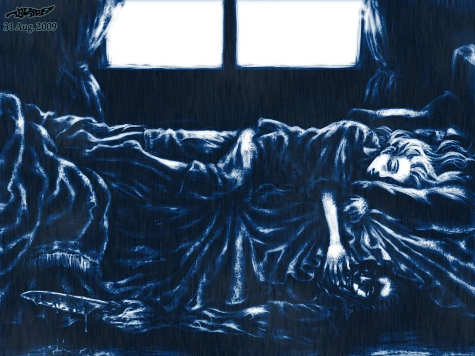

Licking

My great-grandmother lived by herself up in the mountains at her cabin. Her husband was dead, so she was all alone there. She only had one companion, and that was her loving dog. They both adored each other and the dog was a great comfort to her. Every night when she went to bed, he would lick her hand to let her know that he was there to protect her.
One night, she had gone to bed and the dog had licked her hand, like he had done routinely every night since her husband died. But this night was different. She had woken up in the middle of it because she'd heard her dog whimpering. She wanted to comfort him and let her know she was there for him, so she stuck her hand out by the bed and felt him gently lick her hand like always. She figured he was just cold, so she went back to sleep.
The dog's whimpering had woken her up a second time in the night, so she stuck her hand out; the dog licked it and she went back to sleep. This happened a third time - she stuck her hand out and the dog stopped whimpering and came and licked her hand. She stayed awake a few moments afterward, then went back to sleep again.
In the morning, she woke up and stuck her hand out by the bed, but nothing licked her hand. She thought that the dog had already awakened and was just in the front room. She rolled over and got out of bed and heard a drip... drip... drip... drip. She thought the sound was coming from the kitchen, so she walked over and turned the handles on the sink faucet, but it wasn't the source of the noise.
After frustratingly checking the sink and its pipes, she gave up and continued into her bathroom to take a shower. As she got closer to the bathroom door, it was evident that the sound was coming from within. She opened the door, looked above the bathtub and gasped in utter horror. There, hanging from the light by his collar, was her loving companion. His blood was dripping into the bathtub.
She screamed and began to cry. Wiping her eyes and sobbing, she turned and looked into the mirror. In it, she saw the dog's reflection, and written on the mirror in its blood, with drips and streaks hanging down from each letter, were the words...
HUMANS CAN LICK TOO